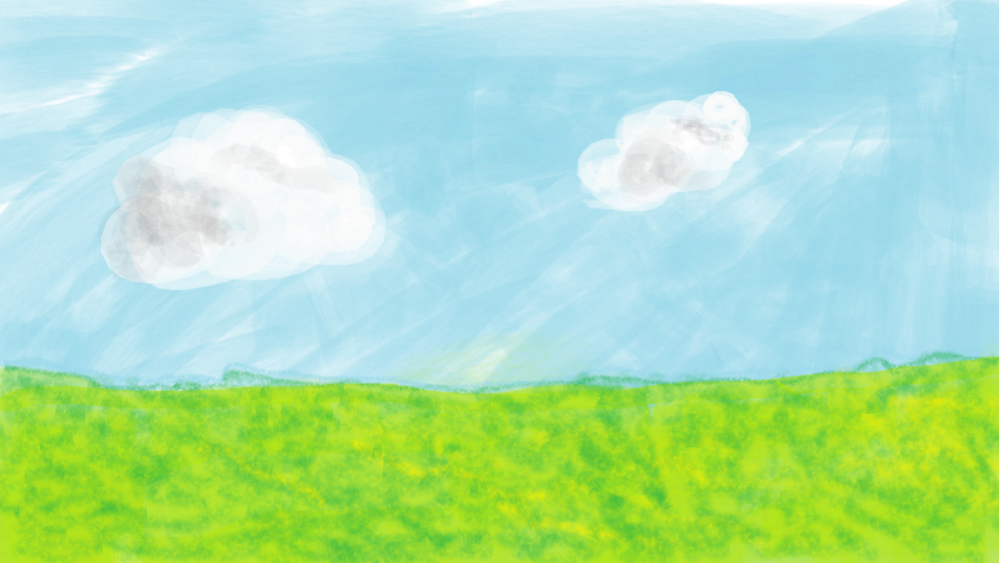

Toca para comenzar
Gracias por todo :3
-

- Idea base original
-

- Primera flor...
- si ya se esta fea
-

- Asi se hubiera visto sin limitaciones de codigo
-

- hubiera estado mejor un canva para esto qwq
-

- Pero me esforce ok, aunque no parezca qwq
-

- Me gusta la flor que dibuje :p ...
- no le hagas bulling a mi flor qwq
- en fin, todo tiene un final
- incluso los finales tienen finales
- ...
- ...
- y este es ya el final del final
- Te gusto?
- ...
- Zorra productions
- Dibujado con Paint
- Sonido disponible aqui, tocame
- Siempre hay algo de lo que estar agradecido, y ...
- para mi tu compañia es algo de lo que estare agradecido...
- para el resto de mi vida